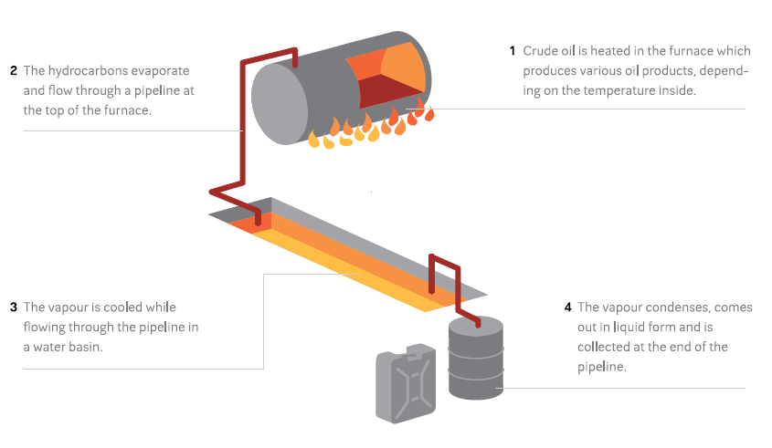
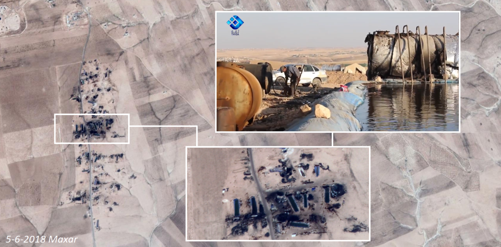
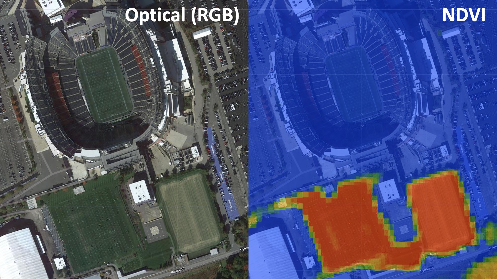
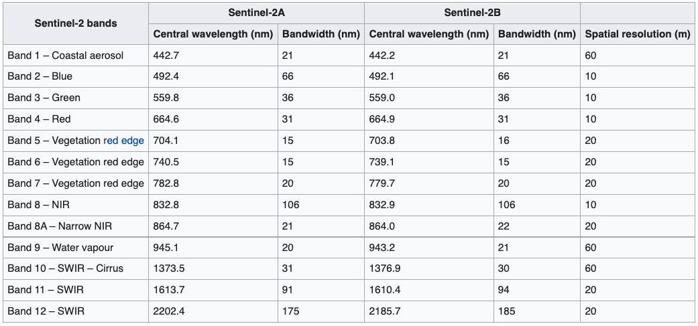
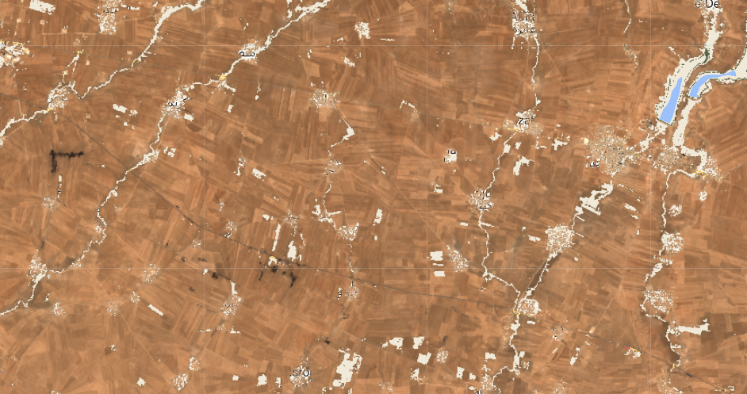
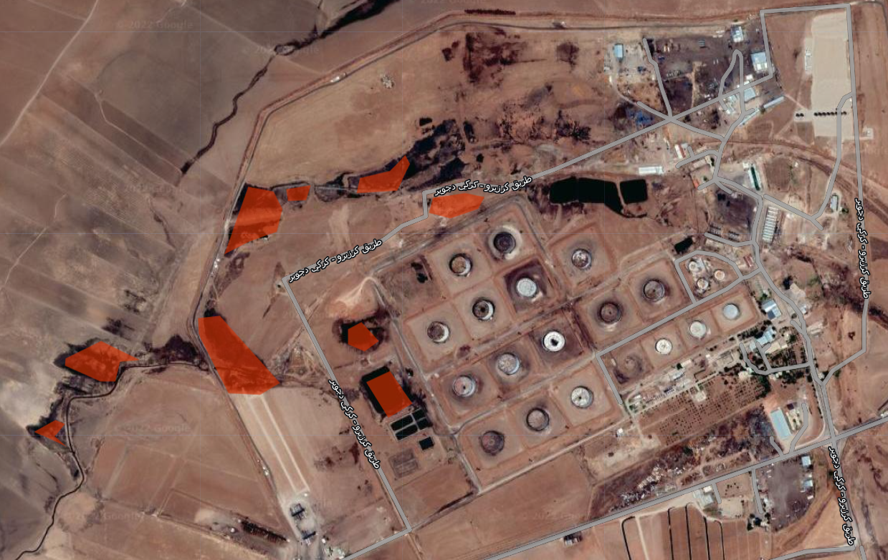
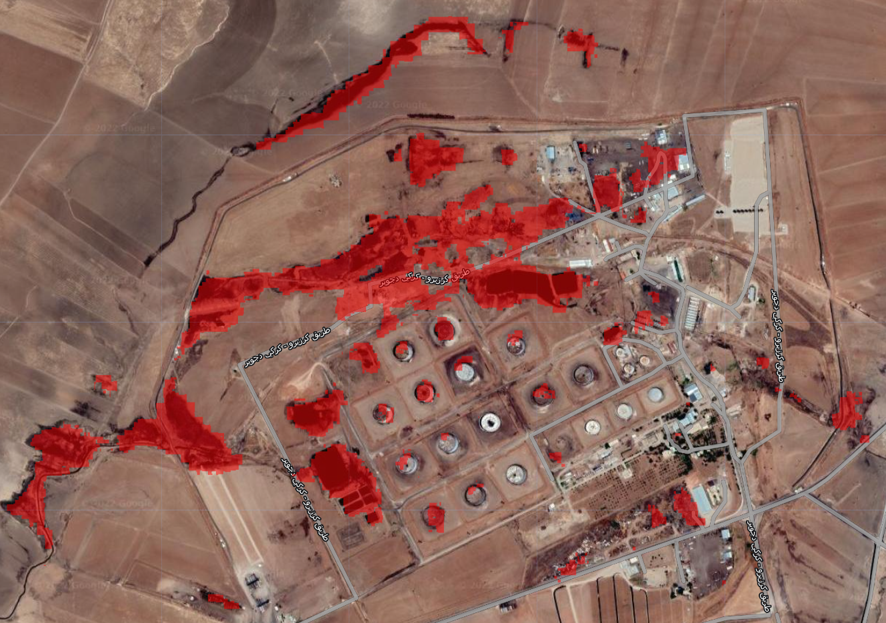
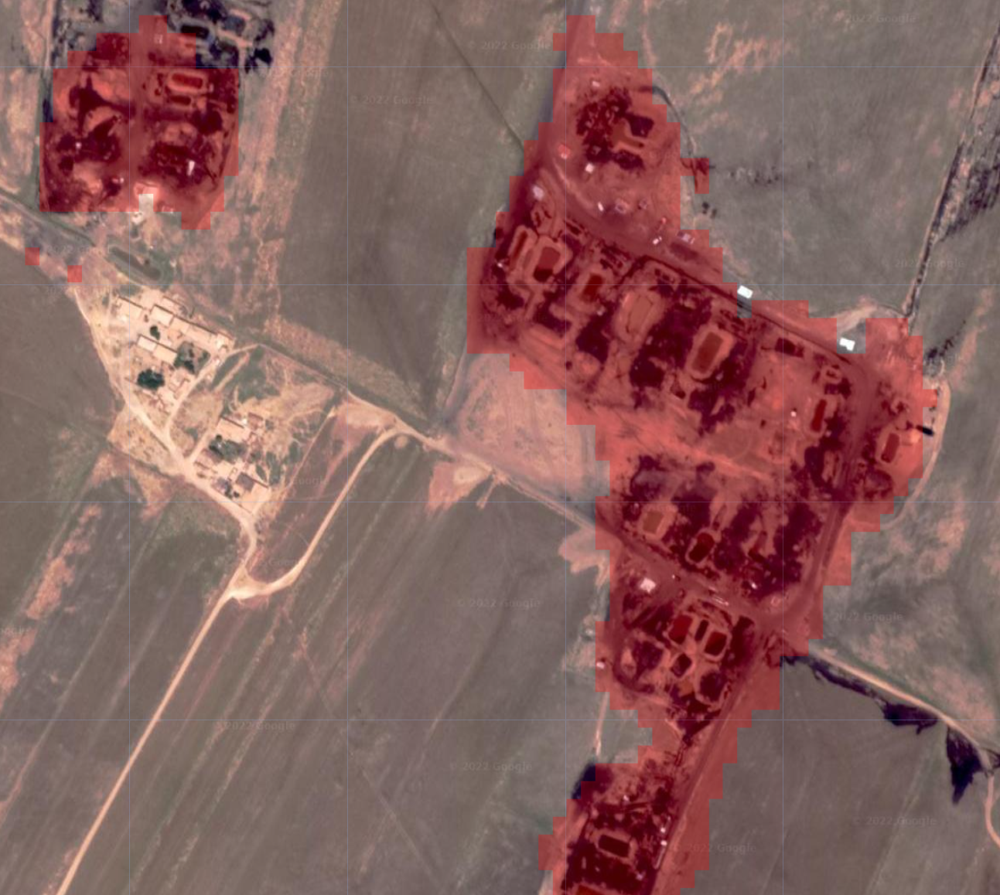
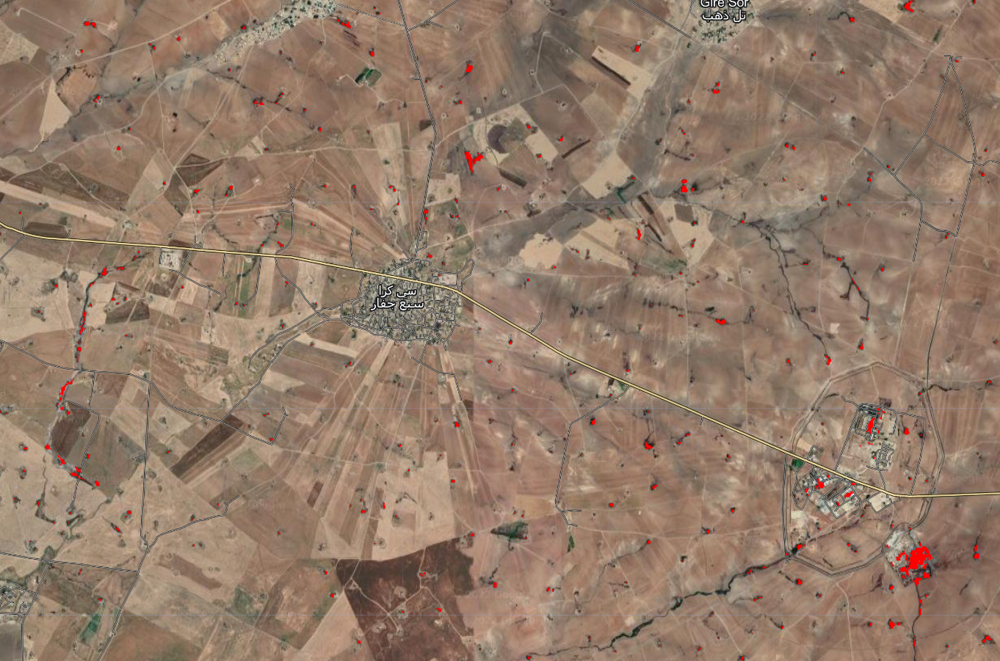
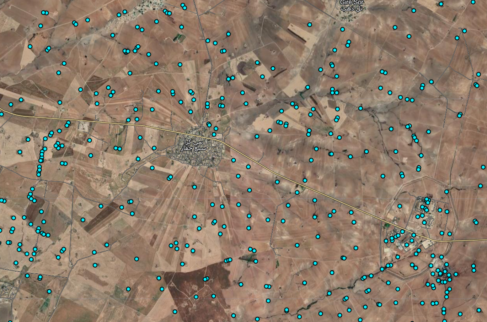

Makeshift Refinery Detection
Topics: multispectral satellite imagery, machine learning, informal economies, war.
In Syria, over a decade of war has ravaged one of its most important industries. Oil is a basic necessity for local residents who need to heat their homes and keep the lights on. It’s also an important source of income for armed groups who control production; by some estimates the Islamic State was making over $40 million per month in oil revenues, and the Syrian Democratic Forces were making $120 million per year selling oil to their adversaries, the Syrian Government. This, in turn, has made oil production facilies a frequent target of airstrikes, leading to catastrophic environmental consequences.
The destruction of Syria’s oil infrastructure and its importance as a source of revenue for armed groups has led to a massive rise in makeshift oil extraction and refining. These makeshift refineries are often constructed by digging a large pit, lining it with a tarp, and filling it with polluted water. A furnace heats crude oil, which is run through a pipe cooled by the basin and collected in drums:
 Wim Zwijnenburg wrote an excellent Bellingcat article on the subject, which you should read before going any further in this tutorial. In the article, Wim notes that these facilities “can be spotted by the ditch and the black spot at the end with oil waste residues, which blacken the soil around the furnace.” These refineries also frequently leak, blackening large swaths of land around them.

Looking around Northwestern Syria, we can see agricultural fields pockmarked by these makeshift refineries (you can pan around and zoom in):
Previous efforts to quantify informal oil production have involved manually sifting through satellite imagery and counting them. This is a painstaking process that leaves a number of important questions unanswered. Even if we were to count all of the individual refineries, could we get an estimate of polluted area? What if we wanted to count the refineries in a new part of Syria? Or get annual or even monthly estimates of new refineries?
Below is an Earth Engine application that automates the detection of makeshift refineries in Northeastern Syria, using mutlispectral satellite imagery and machine learning. Blue dots represent the locations of predicted makeshift oil refineries and general oil pollution, while red areas indicate areas predicted to be contaminated by oil.
You can draw an Area of Interest (AOI) and get the total number of contaminated points as well as the total number of contaminated square meters within the AOI. drawing multiple AOIs will show a running total of these statistics. It’s not perfect– it misses some refineries and falsely identifies some others– but it is generally quite accurate; you can visually verify the results of the prediction by zooming in using the “+” button. You can toggle different layers using the “layers” tab as well. This tool could be used to get an estimate of oil production in a user-defined area, and eventually to direct cleanup efforts. The fullscreen version of the application can be found here, and the source code here. This tutorial will first cover the basics of multispectral remote sensing, before moving into a step-by-step guide in the construction of this model.
Multispectral Remote Sensing
Different materials reflect light differently. An apple absorbs shorter wavelengths (e.g. blue and green), and reflects longer wavelengths (red). Our eyes use that information– the color– to distinguish between different objects. But our eyes can only see a relatively small sliver of the electromagnetic spectrum covering blue, yellow, and red; we can’t see UV or infrared wavelengths, for example, though the extent to which different materials reflect or absorb these wavelengths is just as useful for distinguishing between them. For example, Astroturf (fake plastic grass) and real grass will both look green to us, espeically from a satellite image. But living plants absorb radiation from the sun in a part of the light spectrum that we can’t see. There’s a spectral index called the Normalized Difference Vegetation Index (NDVI) which exploits this fact to isolate vegetation in multispectral satellite imagery. So if we look at Gilette Stadium near Boston, we can tell that the three training fields south of the stadium are real grass (they generate high NDVI values, showing up red), while the pitch in the stadium itself is astroturf (generating low NDVI values, showing up blue).

In other words, even though these fields are all green and indistinguishable to the human eye, their spectral profiles beyond the visible light spectrum differ, and we can use this information to distinguish between them. Below is a plot of the spectral profiles of different materials, including oil.
The European Space Agency’s Sentinel-2 satellite collects spectral information well beyond the visible light spectrum, enabling this sort of analysis. It chops the electromagnetic spectrum up into “bands”, and measures how strongly wavelengths in each of those bands is reflected:

We’ll be using this satellite to distinguish between oil and other materials, similar to the way we were able to distinguish between real and fake grass at Gilette Stadium. First, we’ll have to do a bit of pre-processing on the Sentinel-2 imagery after which we’ll train a machine learning model to identify oil.
Machine Learning Workflow
Pre-Processing
As always, the first step in our project will be to load and pre-process satellite imagery. For this project, we’ll be using Sentinel-2 imagery. Let’s load imagery from 2020-2021, filter out cloudy images, and define visualization parameters:
var start='2020-04-01'
var end='2021-07-01'
var bands = ['B2', 'B3', 'B4','B5','B6','B7','B8', 'B8A','B11','B12']
var sentinel = ee.ImageCollection('COPERNICUS/S2_SR')
.filter(ee.Filter.date(start, end))
.filter(ee.Filter.lt('CLOUDY_PIXEL_PERCENTAGE', 10))
.mean()
.select(bands)
var s_rgb = {
min: 0.0,
max: 3000,
bands:['B4', 'B3', 'B2'],
opacity:1
};When loading the Sentinel-2 imagery, I’ve also onlyh selected the bands that we will ultimately use in our analysis. There are a number of other bands included in the data that we don’t need. I’ve omitted a few bands (B1, B9, B10) because they’re collected at a much lower spatial resolution (60 meters) compared to the other bands.
A couple types of landcover are so readily identifiable that we can remove them with thresholds. Water and vegetation both have spectral indices; we looked at NDVI above, but there’s a similar one for water called NDWI. These can be calculated from Sentinel-2 imagery as follows:
var ndvi=sentinel.normalizedDifference(['B8','B4'])
.select(['nd'],['ndvi'])
var ndwi=sentinel.normalizedDifference(['B3','B8'])
.select(['nd'],['ndwi'])We use the normalizedDifference function and specify which bands we want to use for each index. NDVI uses the red and near infrared bands (B4 and B8), while NDWI uses bands 3 and 8. Finally, we want to rename the resulting band from ‘nd’ to the name of the spectral index.
Now we can use these indices to filter out water and vegetation. We do this using the updateMask function, and specify that we want to remove areas that have an NDVI value higher than 0.2 and and NDWI value higher than 0.3. You can play around with these thesholds until you achieve the desired results.
var image=sentinel.updateMask(ndwi.lt(0.3))
.updateMask(ndvi.lt(0.2))
.addBands(ndvi)
.select(bands)We also want to only select bands that are relevant to our analysis; Sentinel
Finally, let’s clip the image to our Area of Interest (AOI) and add it to the map using the visualization parameters we defined earlier.
Map.addLayer(image.clip(AOI), s_rgb, 'Sentinel');
Now that we’ve loaded and preporcessed our satellite imagery, we can proceed with the rest of our task. Ultimately, we want to create a map of the study area which shows us different “landcovers” (materials). This can broadly be achieved in three steps:
- Generate labeled landcover data
- Train a model using labeled data
- Validate the model
1. Generating Labeled Data
A vital step in any machine learning workflow is the generation of labeled data, which we will use to train a model to differentiated between different types of land cover and later to test the model’s accuracy. By looking around the study area, we can get a sense of the different land cover classes that we might encounter:
- Agricultural Land
- Urban Areas
- Oil Contamination
Naturally we could subdivide each of these into sub-categories, and there are probably other classes we haven’t included that may be present in the study area. The choice of classes is partly informed by the nature of the task at hand. In theory, the most efficient number of classes for this task would be two: oil, and everything else. The problem is that the “everything else” category would be pretty noisy since it would include a wide range of materials, making it harder to distinguish this from oil. In practice, a visual inspection of major landcover classes in the study area is a quick-and-dirty way of getting at roughly the right number of classes. This is also an iterative process: you can start with a set of labeled data, look at the model results, and adjust your sampling accordingly. More on this later.
The main landcover class we’re interested in is, of course, oil. Some oil contamination is readily visible from the high resolution satellite basemap; rivers of oil flow from the leaking Ger Zero refinery. We can draw polygons around the oil contamination like so:

The same process is applied to agricultural land and urban areas. In general, you want to make sure that you’re sampling from all across the study area. I’ve generated between 4-10 polygons per landcover class in different places. We’re now left with a featureCollection composed of polygons for each class. I’ve named them oil, agriculture, and urban.
However, I don’t just want to use all of the pixels contained in these polygons for training. There are several reasons for this. First, it would likely lead to overfitting. Second, there are probably over a million pixels between all of the polygons, which would slow things down unnecessarily. Third, I haven’t drawn the polygons to be equal sizes across classes, so I could end up with way more points from one class compared to another. It’s OK to have some imbalance between classes, but you don’t want it to be extreme.
As such, the next step involves taking random samples of points from within these polygons. I do so using the randomPoints function:
var oil_points=ee.FeatureCollection.randomPoints(oil, 3000).map(function(i){
return i.set({'class': 0})})
var urban_points=ee.FeatureCollection.randomPoints(urban, 1000).map(function(i){
return i.set({'class': 1})})
var agriculture_points=ee.FeatureCollection.randomPoints(agriculture, 2000).map(function(i){
return i.set({'class': 2})})In the first line, I create a new featureCollection called oil_points which contains 3000 points sampled from the polygons in the oil featureCollection. I then map through each of these points, and set a property called “class” equal to 0. I do the same for the urban and agricultural areas, setting the “class” property of these featureCollections to 1 and 2, respectively. Ultimately, our model will output a raster in which each pixel will contain one of these three values. A value of 0 in the output will represent the model predicting that that pixel is oil, based on the training data; a value of 1 would indicate predicted urban land cover, and 2 predicted agricultural landcover.
Now we want to create one feature collection called “sample”, which will contain all three sets of points.
var sample=ee.FeatureCollection([oil_points,
urban_points,
agriculture_points
])
.flatten()
.randomColumn();We’ve also assigned a property called “random” using the randomColumn function. This lets us split our featureCollection into two: one used for training the model, and one used for validation. We’ll use a 70-30 split.
var split=0.7
var training_sample = sample.filter(ee.Filter.lt('random', split));
var validation_sample = sample.filter(ee.Filter.gte('random', split));2. Training a Model
Having generated labeled training and testing data, we now want to teach an algorithm to associate the pixels in those areas (in particular, their spectral profiles) with a specific landcover class.
The list of points we generated in the previous step contain a label (0: oil, 1: urban, 2: agriculture). However, they do not yet contain any information about the spectral profile of the Sentinel-2 image. The sampleRegions function lets us assign a the band values from an image as properties to our feature collection. We do this for both training sample and the validation sample.
var training = image.sampleRegions({
collection: training_sample,
properties: ['class'],
scale: 10,
});
var validation = image.sampleRegions({
collection: validation_sample,
properties: ['class'],
scale: 10
});Each point in the featureCollections above will contain a property denoting each Sentinel-2 band’s value at that location, as well as the property denoting the class label.
Now we’re ready to train the model. We’ll be using a Random Forest classifier, which basically works by trying to separate your data into the specified classes by setting lots of thresholds in your input properties (in our case, Sentinel-2 band values). It’s a versatile and widely-used model.
We first call a random forest classifier with 500 trees. More trees usually yields higher accuracy, though there are diminishing returns. Too many trees will result in your computation timing out. We then train the model using the train function, which we supply with the training data as well as the name of the property that contains our class labels (“class”).
var model = ee.Classifier.smileRandomForest(500)
.train(training, 'class');The trained model now associates Sentinel-2 band values with one of three landcover classes. We can now feed the model pixels it has never seen before, and it will use what it now knows about the spectral profiles of the differnt classes to predict the class of the new pixel.
var prediction = image.classify(model)prediction is now a raster which contains one of three values (0: oil, 1: urban, 2: agriculture). We’re only interested in oil, so let’s isolate the regions in this raster that have a value of 0, and add them in red to the map:
var oil_prediction=prediction.updateMask(prediction.eq(0))
Map.addLayer(oil_prediction, {palette:'red'}, 'Predicted Oil Conamination')
3. Validation
The image above should look somewhat familiar. It’s Ger Zero, where we trained part of our model. We can see in red the areas which the model predicts to be oil pollution. These largley align with the areas that we can see as being contaminated based on the high resolution basemap. It’s not perfect, but it’s pretty good.
Let’s scroll to another area, far from where the model was trained.  This image shows two clusters of makeshift refineries which were identified by the model. This is good, though we can only get so far by visually inspecting the output from our model. To get a better sense of our model’s performance, we can use the validation data that we generated previously. Remember, these are labeled points which our model was not trained on, and has never seen before.
We’ll take the validation featureCollection containing our labeled points, and have our model classify it.
var validated = validation.classify(model);Now the validated variable is a featureCollection which contains both manual labels and predicted labels from our model. We can compare the manual labels to the predicted output to get a sense of how well our model is performing. This is called a Confusion Matrix (or an Error Matrix):
var testAccuracy = validated.errorMatrix('class', 'classification');
print('Confusion Matrix ', testAccuracy);| Labels | ||||
|---|---|---|---|---|
| Oil | Urban | Agriculture | ||
| Oil | 876 | 1 | 5 | |
| Prediction | Urban | 0 | 168 | 8 |
| Agriculture | 1 | 4 | 514 |
Now, we can see that of the 877 points that were labeled “oil”, only one was falsely predicted to be agicultural land. The model also falsely predicted as oil one point that was labeled urban, and five points that were labeled agriculture. Not bad. We can get a sense of the model’s overall accuracy using the accuracy function on the confusion matrix:
print('Validation overall accuracy: ', testAccuracy.accuracy())This tells us that the overall accuracy of our model is around 98%. However, we shouldn’t take this estimate at face value. There are a number of complicated reasons (spatial autocorrelation in the training data, for example) why this figure is probably inflatred. If we were submitting this analysis to a peer-reviewed journal, we’d take great care in addressing this, but for our purposes we can use the accuracy statistics to guide our analysis and get a rough sense of how well the model is performing.
This model isn’t perfect; it often misclassifies the shorelines of lakes as oil, or certain parts of urban areas. As previously mentioned, training a model is often an iterative process. At this stage, if your accuracy is not as high as you’d like it to be, you can use the output to figure out how to tweak the model. For example, you may observe that your model is confusing urban areas with oil spills. You can draw a polygon over the erroneous area, label it urban landcover and retrain the model thereby hopefully improving accuracy. We could further refine our model in this way.
Communicating the Results
Now that we’ve got a model that can identify oil from multispectral satellite imagery fairly well, we can set about making our results accessible.
One of the things we’re particularly interested in is the distribution of small refineries. The way we’re currently visualizing the prediction (the raster output from the model where predicted oil is shown in red and everything else is transparent) makes it hard to see these small refineries when we zoom out:

We can convert our raster into a series of points using the reduceToVectors function. In essence, this takes homogenous regions of an image (e.g., an area predicted to be oil surrounded by an area not predicted to be oil) and converts it into a point:
var vectors = oil_prediction.reduceToVectors({
geometry: AOI,
scale: 10,
geometryType: 'centroid',
eightConnected: true,
labelProperty: 'classification',
maxPixels:1653602926
}).filterBounds(AOI)
Map.addLayer(vectors.style({color: 'black', fillColor: '#00f2ff', pointSize:5}),{},'Oil Contamination Points',false)Now the distribution of small refineries is much more easily visible as blue dots:

If we zoom out even further, we can see clusters of points that correspond to areas of high oil production. Using geolocated photographs, we can roughly ground-truth the model output: